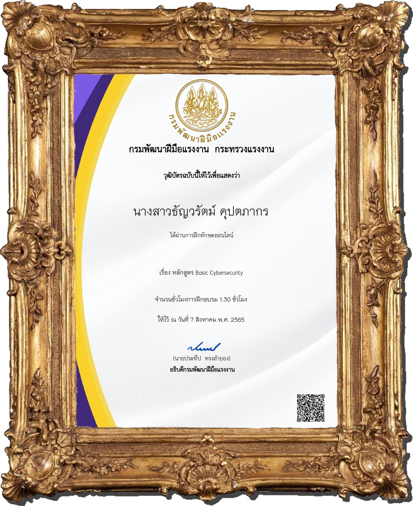

|

|
|---|
01Certificate For Completion (SKOOLDIO) ใบเกียรติบัตรเพื่อแสดงว่าข้าพเจ้าได้เรียนคอร์สการใช้ภาษาHTMLและCSSครบจบตามหลักสูตรของทางสถาบัน Skooldioแล้ว ซึ่งเป็นคอร์สที่เมื่อเรียนจบแล้วสามารถนำความรู้ไปใช้เขียนเว็บไซต์ได้ 02Pre-TGAT ความถนัดทั่วไป ใบเกียรติบัตรเพื่อแสดงว่าข้าพเจ้าได้เข้าร่วมโครงการสอบTGATเสมือนจริงจัดสอบโดย 03CMU MOOC (LIFELONG EDUCATION) ใบเกียรติบัตรเพื่อแสดงว่าข้าพเจ้าได้เรียนคอร์สทักษะและความเข้าใจในการใช้เทคโนโลยีดิจิทัล (Digital Literacy)ครบจบตามหลักสูตรของทางสถาบัน CMU MOOCเรียบร้อยแล้ว ซึ่งมีเนื้อหาที่มุ่งเน้นให้เข้าใจเกี่ยวกับคอมพิวเตอร์ ระบบเครือข่ายคอมพิวเตอร์และจริยธรรมที่เกี่ยวข้องกับ Cyber Security 04DSD Training (กระทรวงฝีมือแรงงาน) ใบเกียรติบัตรเพื่อแสดงว่าข้าพเจ้าได้เสร็จสิ้นการฝึกใช้ภาษาHTML CSS PHP PythonและSQL เบื้องต้นกับทางกระทรวงฝีมือแรงงาน ซึ่งเป็นการเรียนออนไลน์คลาสผ่านแอพพลิเคชันZoom Meeting 05SKR Volunteer โรงเรียนบึงเขาย้อน (คงพันธุ์อุปถัมภ์) (SUANKULARB RANGSIT) ใบเกียรติบัตรเพื่อแสดงว่าข้าพเจ้าได้เข้าร่วมเป็นจิตอาสานอกสถานที่ของทางโรงเรียนสวนกุหลาบวิทยาลัย รังสิต โดยได้รับหน้าที่ให้เป็นพิธีกรและสตาฟที่ให้ความรู้กับนักเรียนระดับชั้นประถมศึกษาปีที่5 โรงเรียนบึงเขาย้อน 06Backstage โรงเรียนสวนกุหลาบวิทยาลัย รังสิต (SUANKULARB RANGSIT) ใบเกียรติบัตรเพื่อแสดงว่าข้าพเจ้าได้เข้าร่วมเป็นผู้ช่วยฝ่ายแบคสเตจของการแสดงละครเรื่องแม่นาคพระโขนง เดอะมิวสิคัล ในงานกิจกรรมวันสุนทรภู่ ปีการศึกษา 2565 |